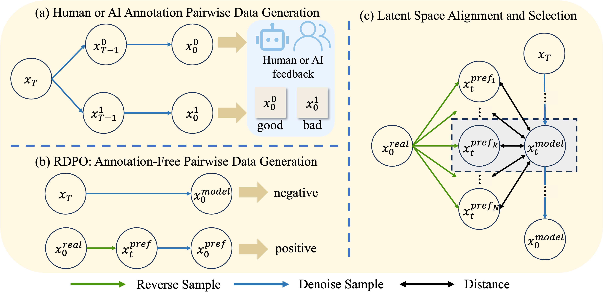

Video generation techniques have achieved remarkable advancements in visual quality, yet faithfully reproducing real‑world physics remains elusive. Preference‑based model post-training may improve physical consistency, but requires costly human‑annotated datasets or reward models that are not yet feasible. To address these challenges, we present Real Data Preference Optimisation (RDPO), an annotation‑free framework that distils physical priors directly from real‑world videos. Specifically, the proposed RDPO reverse‑samples real video sequences with a pre‑trained generator to automatically build preference pairs that are statistically distinguishable in terms of physical correctness. A multi‑stage iterative training schedule then guides the generator to obey physical laws increasingly well. Benefiting from the dynamic information explored from real videos, our proposed RDPO significantly improves the action coherence and physical realism of the generated videos. Evaluations on multiple benchmarks and human evaluations have demonstrated that RDPO achieves improvements across multiple dimensions.
BibTex Code Here